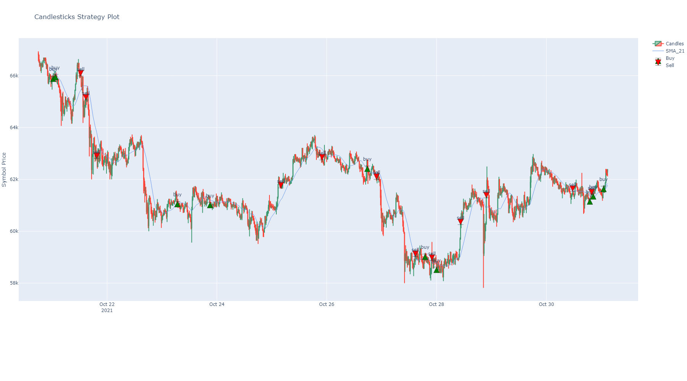

Plotting Module
This module can manage plots.
Plots made with Plotly library: https://plotly.com/
Colors can be picked with the name of the color or the index number from this list:
plotly_colors = ["aliceblue", "antiquewhite", "aqua", "aquamarine", "azure", "beige", "bisque", "black",
"blanchedalmond", "blue", "blueviolet", "brown", "burlywood", "cadetblue", "chartreuse", "chocolate",
"coral", "cornflowerblue", "cornsilk", "crimson", "cyan", "darkblue", "darkcyan", "darkgoldenrod",
"darkgray", "darkgrey", "darkgreen", "darkkhaki", "darkmagenta", "darkolivegreen", "darkorange",
"darkorchid", "darkred", "darksalmon", "darkseagreen", "darkslateblue", "darkslategray",
"darkslategrey", "darkturquoise", "darkviolet", "deeppink", "deepskyblue", "dimgray", "dimgrey",
"dodgerblue", "firebrick", "floralwhite", "forestgreen", "fuchsia", "gainsboro", "ghostwhite", "gold",
"goldenrod", "gray", "grey", "green", "greenyellow", "honeydew", "hotpink", "indianred", "indigo",
"ivory", "khaki", "lavender", "lavenderblush", "lawngreen", "lemonchiffon", "lightblue", "lightcoral",
"lightcyan", "lightgoldenrodyellow", "lightgray", "lightgrey", "lightgreen", "lightpink",
"lightsalmon", "lightseagreen", "lightskyblue", "lightslategray", "lightslategrey", "lightsteelblue",
"lightyellow", "lime", "limegreen", "linen", "magenta", "maroon", "mediumaquamarine", "mediumblue",
"mediumorchid", "mediumpurple", "mediumseagreen", "mediumslateblue", "mediumspringgreen",
"mediumturquoise", "mediumvioletred", "midnightblue", "mintcream", "mistyrose", "moccasin",
"navajowhite", "navy", "oldlace", "olive", "olivedrab", "orange", "orangered", "orchid",
"palegoldenrod", "palegreen", "paleturquoise", "palevioletred", "papayawhip", "peachpuff", "peru",
"pink", "plum", "powderblue", "purple", "red", "rosybrown", "royalblue", "rebeccapurple",
"saddlebrown", "salmon", "sandybrown", "seagreen", "seashell", "sienna", "silver", "skyblue",
"slateblue", "slategray", "slategrey", "snow", "springgreen", "steelblue", "tan", "teal", "thistle",
"tomato", "turquoise", "violet", "wheat", "white", "whitesmoke", "yellow", "yellowgreen"]
- binpan.handlers.plotting.candles_ta(data: DataFrame, indicators_series: Optional[list] = None, rows_pos: list = [], indicator_names: list = [], indicators_colors: list = [], indicators_color_filled: Optional[dict] = None, width=1800, height=1000, range_slider: bool = False, candles_ta_height_ratio: float = 0.5, plot_volume: bool = True, title: str = 'Candlesticks, indicators, and Volume plot', yaxis_title: str = 'Symbol Price', annotations: Optional[list] = None, markers: Optional[list] = None, text_positions: Optional[list] = None, annotation_colors: Optional[list] = None, annotation_names: Optional[list] = None, labels: Optional[list] = None, plot_bgcolor=None)
Data needs to be a DataFrame that at least contains the columns: Open Close High Low Volume
It plots candles and optionally volume, but can plot any list of pandas series with indicators (float values) with same index.
Indicators will be plotted below the candles in subplots according to a row position number, counting 1 as overlay in the candles subplot and the rest in row subplots. Several indicators can be plotted in the same row to overlay between them and compare.
Note
Beware of zeros or values in a different scale when plotting overlapped over candles, that can break the scale of the graph.
- Parameters
data (pd.DataFrame) – a DataFrame that at least contains the columns: Open Close High Low Volume
indicators_series (list) – a list of pandas series with float values as indicators.
rows_pos (list) – 1 means over the candles. Other numbers mean subsequent subplots under the candles.
indicator_names (list) – Names to show in the plot. Defaults to series name.
indicators_colors (list) –
Color can be forced to anyone from the plotly colors list.
indicators_color_filled (list or dict) – Color can be forced to fill to zero line. Is a list of Nones for each indicator in indicator list or a fillcolor. For transparent colors use rgba string code to define color. Example for transparent green ‘rgba(26,150,65,0.5)’ or transparent red ‘rgba(204,0,0,0.5)’. It can be a dictionary with each indicator column name and fill color.
width (int) – Plot sizing
height (int) – Plot sizing
range_slider (bool) – For the volume plot.
candles_ta_height_ratio (float) – A ratio between the big candles plot and (if any) the rest of indicator subplots below.
plot_volume (bool) – Optional to plot volume.
title (str) – A title string.
yaxis_title (str) – A name string.
annotations (list) – A list of pandas series with values to plot marks or annotations overlapped in the candles plot.
markers (list) –
Ordered like the annotations list. Example
markers = ["arrow-bar-down", "arrow-bar-up", "arrow-bar-left", "arrow-bar-right"]
text_positions (list) –
Ordered like the annotations list. Example
text_positions = ["top center", "middle left", "top center", "bottom center", "top right", "middle left", "bottom right", bottom left", "top right", "top right"]
annotation_colors (list) –
Ordered like the annotations list. Example from default colors
annotation_colors = ['cornflowerblue', 'blue', 'lightseagreen', 'green', 'cornflowerblue', 'rosybrown', 'lightseagreen', 'black', 'orange', 'pink', 'red', 'rosybrown', 'cornflowerblue', 'blue', 'lightseagreen', 'green', 'cornflowerblue', 'rosybrown', 'lightseagreen', 'black', 'orange', 'pink', 'red', 'rosybrown']
annotation_names (list) – Ordered like the annotations list of names to show in legend.
labels (list) –
Ordered like the annotations list of tags to show overlapped. It defaults to price.
Example: .. code-block:: python
labels = [‘buy’, ‘sell’]
Plot example:
import binpan ethbtc = binpan.Symbol(symbol='ethbtc', tick_interval='1h') ethbtc.macd() binpan.handlers.plotting.candles_ta(data = ethbtc.df, indicators_series=[ethbtc.df['MACD_12_26_9_'], ethbtc.df['MACDh_12_26_9_'], ethbtc.df['MACDs_12_26_9_']], indicators_color_filled=[False, 'rgba(26,150,65,0.5)', False], rows_pos=[2,2, 2], indicators_colors=['orange', 'green', 'skyblue'])

- Parameters
plot_bgcolor – Set background color.
- binpan.handlers.plotting.candles_tagged(data: DataFrame, width=1800, height=1000, candles_ta_height_ratio=0.5, plot_volume=True, title: str = 'Candlesticks Strategy Plot', yaxis_title: str = 'Symbol Price', on_candles_indicator: list = [], priced_actions_col='priced_actions', actions_col: Optional[str] = None, indicators_series: list = [], indicator_names: list = [], indicators_colors: list = [], fill_control: Optional[dict] = None, rows_pos: list = [], labels: list = [], default_price_for_actions='Close', plot_bgcolor=None)
This is a shortcut from candles_ta. It defaults many inputs to better Jupyter Notebook usage.
Data needs to be a DataFrame that at least contains the columns: Open Close High Low Volume
It plots candles and optionally volume, but can plot any list of pandas series with indicators (float values) with same index.
Indicators will be plotted below the candles in subplots according to a row position number, counting 1 as overlay in the candles subplot and the rest in row subplots. Several indicators can be plotted in the same row to overlay between them and compare.
Note
Beware of zeros or values in a different scale when plotting overlapped over candles, that can break the scale of the graph.
Plot example:

- Parameters
data (pd.DataFrame) – a DataFrame that at least contains the columns: Open Close High Low Volume
indicators_series (list) – a list of pandas series with float values as indicators.
rows_pos (list) – 1 means over the candles. Other numbers mean subsequent subplots under the candles.
indicator_names (list) – Names to show in the plot. Defaults to series name.
indicators_colors (list) –
Color can be forced to anyone from the plotly colors list:
fill_control (dict or list) – A dictionary with color to fill or False bool for each indicator. Is the color to the zero line for the indicator plot. If a list passed, it iterates to assign each item in the list with the same index item in the indicators list.
width (int) – Plot sizing
height (int) – Plot sizing
candles_ta_height_ratio (float) – A ratio between the big candles plot and (if any) the rest of indicator subplots below.
plot_volume (bool) – Optional to plot volume.
title (str) – A title string.
yaxis_title (str) – A name string.
actions_col – A column name of the column with string tags like buy, sell, etc. This is for plotting marks over candles.
priced_actions_col – The name of the column containing value of action to position over candles.
on_candles_indicator – A list of pandas series with values to plot over the candles, not in a subplot. Example: SMA.
labels (list) –
Ordered like the annotations list of tags to show overlapped. It defaults to price. Example:
labels = ['buy', 'sell']
default_price_for_actions – Column to pick prices for actions, because actions will be labeled, in example, actions values like buy or sell with an arrow will be positioned from the close price if not exists a more precise value for the action.
Example:
import binpan btcusdt = binpan.Symbol(symbol='btcusdt', tick_interval='15m', time_zone='Europe/Madrid', end_time='2021-10-31 03:00:00') btcusdt.sma(21) df = binpan.handlers.strategies.random_strategy(data=btcusdt.df, 10, 10) df.actions.value_counts() - 980 sell 10 buy 10 Name: actions, dtype: int64 binpan.handlers.plotting.candles_tagged(data=df, plot_volume=False, indicators_series=[df.SMA_21], candles_ta_height_ratio=0.8, actions_col='actions', labels=['buy', 'sell'])
- Parameters
plot_bgcolor – Set background color.
{kind=link}
- binpan.handlers.plotting.plot_trade_size(data: DataFrame, max_size=60, height=1000, logarithmic=False, title='Trade Size')
Plots scatter plot from trades quantity and trades sizes. Marks are size scaled to the max size. Marks are semi transparent and colored using Maker buyer or Taker buyer discrete colors. Usually red and blue.
Can let you see where are the big sized trades done and the taker or maker buyer side.
- Parameters
data (pd.DataFrame) – A BinPans trades dataframe.
max_size (int) – Size of the marks for the biggest quantity sized trades.
height (int) – Plot sizing.
logarithmic (bool) – Y axis in a logarithmic scale.
title (str) – Title string.
- Example:
import binpan lunc = binpan.Symbol(symbol='luncbusd', tick_interval='5m', limit = 100, time_zone = 'Europe/Madrid', time_index = True, closed = True) lunc.get_trades() binpan.handlers.plotting.plot_trade_size(data = lunc.trades, logarithmic=True)

- binpan.handlers.plotting.plot_pie(serie: Series, categories: int = 15, title='Size trade categories', logarithmic=False)
Plots a pie chart from a column. Useful to see size ranges in trades, but can be used in any way.
- Parameters
serie (pd.Series) – pandas serie with numeric values or strings.
categories (int) – Category count to divide chart.
title (str) – String title.
logarithmic (bool) – If logarithmic is selected as true, the sizes of each interval will be distributed in logarithmic steps from the smallest to the largest, that is, the smallest values will be divided into smaller groups that will increase exponentially in size.
Example:
import binpan lunc = binpan.Symbol(symbol='luncbusd', tick_interval='5m', limit = 100, time_zone = 'Europe/Madrid', time_index = True, closed = True) lunc.get_trades() binpan.handlers.plotting.plot_pie(serie = lunc.trades['Quantity'], logarithmic=True)

- binpan.handlers.plotting.plot_scatter(df: DataFrame, x_col: str, y_col: str, symbol: Optional[str] = None, color: Optional[str] = None, marginal: bool = True, title: Optional[str] = None, height: int = 1000, **kwargs)
Plot scatter plots with a column of values in X axis and other in Y axis.
- Parameters
df (pd.DataFrame) – A Dataframe.
x_col (str) – Name of column with X axis data.
y_col (str) – Name of column with Y axis data.
symbol (str) – Name of column with values (discrete or not) to apply a symbol each.
color (str) – Name of column with values (discrete or not) to apply a color each.
marginal (bool) – Lateral auxiliar plots.
title (str) – A title string.
height – Plot sizing.
kwargs – Optional plotly kwargs.
Example:
lunc = binpan.Symbol(symbol='luncbusd', tick_interval='5m', limit = 100, time_zone = 'Europe/Madrid', time_index = True, closed = True) binpan.handlers.plotting.plot_scatter(df = lunc.df, x_col='Close', y_col='Volume', color='Trades', symbol='Close', title='Scatter plot for LUNCBUSD Close price in X and Volume in Y' )

- binpan.handlers.plotting.plot_hists_vs(x0: Series, x1: Series, x0_name: Optional[str] = None, x1_name: Optional[str] = None, bins: int = 50, hist_funct: str = 'sum', height: int = 900, title: Optional[str] = None, **kwargs_update_layout)
Plots two histograms with same x scale to campare distributions of values.
- Parameters
x0 (pd.Series) – A pandas series.
x1 (pd.Series) – A pandas series.
x0_name (str) – Name for the legend
x1_name (str) – Name for the legend
bins (int) – Number of bins or bars to show.
hist_funct (str) –
A function to apply to data. It can be ‘sum’, ‘count’, ‘average’, etc…
More details in: https://plotly.com/python/histograms/#histograms-with-gohistogram
height (int) – Plot sizing.
title (str) – Plot title.
kwargs_update_layout – Plotly update layout options.
Example:
lunc = binpan.Symbol(symbol='luncbusd', tick_interval='5m', limit = 100, time_zone = 'Europe/Madrid', time_index = True, closed = True) binpan.handlers.plotting.plot_hists_vs(x0=lunc.df['High'], x1=lunc.df['Low'], bins=50, hist_funct='count', title='High and Low prices distribution.')

- binpan.handlers.plotting.orderbook_depth(df: DataFrame, accumulated=True, title='Depth orderbook plot', height=500, plot_y='Quantity', **kwargs)
Plots orderbook from a BinPan orderbook dataframe.
- Parameters
df (pd.DAtaFrame) – BinPan orderbook dataframe.
accumulated (bool) – If true, applies cumsum to asks and bids.
title (str) – A title string.
height (int) – Plot sizing.
plot_y (str) – Column name with y axis data. Defaults to Quantity.
kwargs – Plotly kwargs.
Example:
lunc = binpan.Symbol(symbol='luncbusd', tick_interval='5m', limit = 100, time_zone = 'Europe/Madrid', time_index = True, closed = True) lunc.get_orderbook()